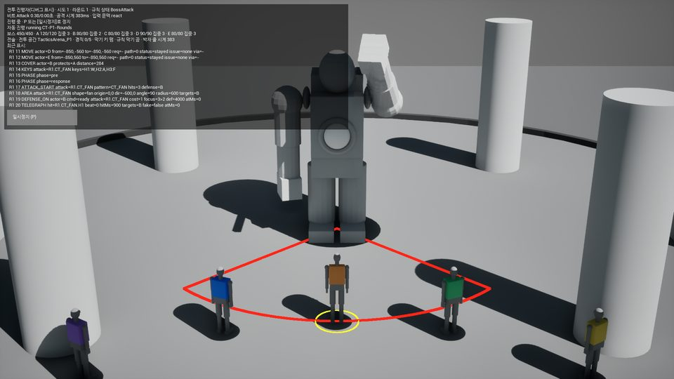
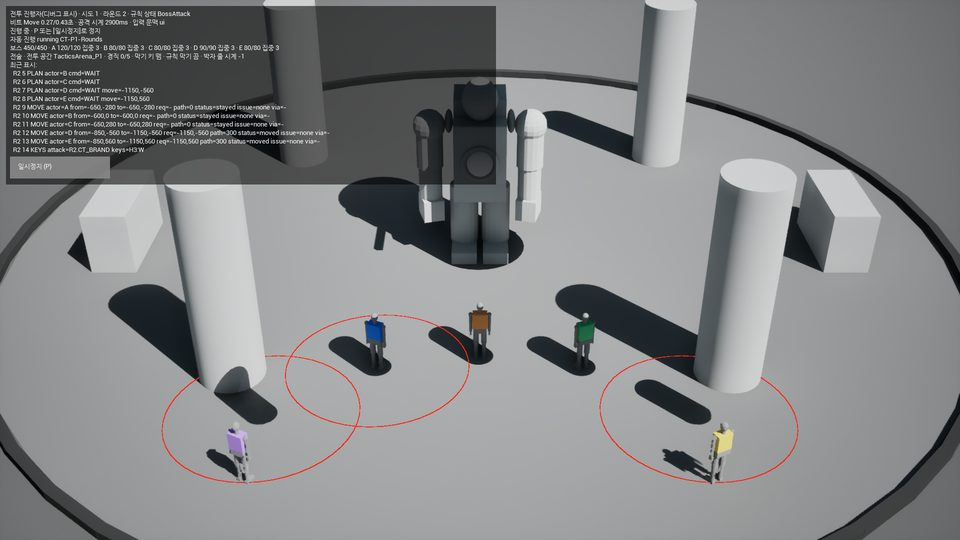
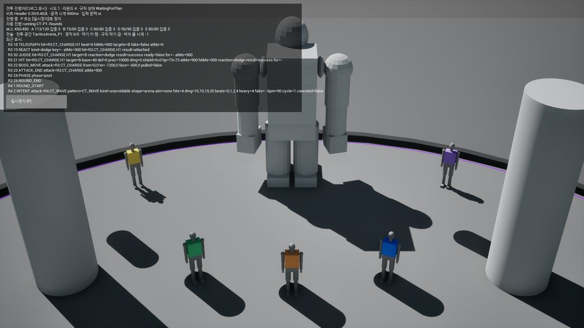
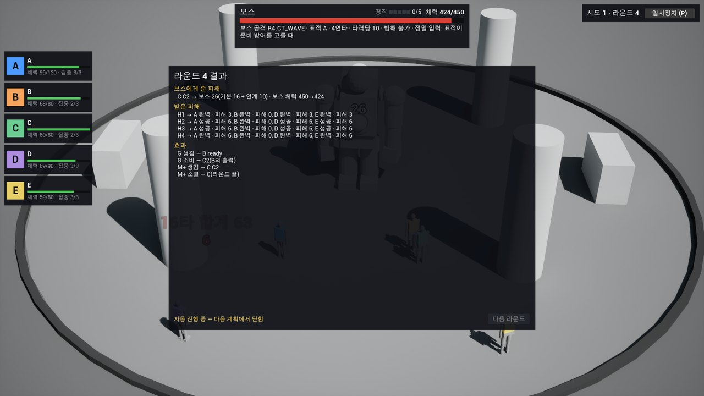
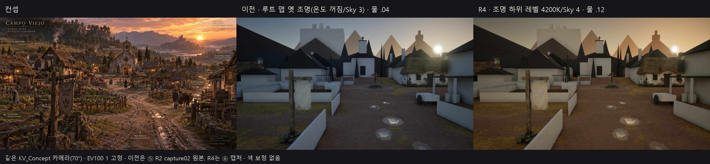
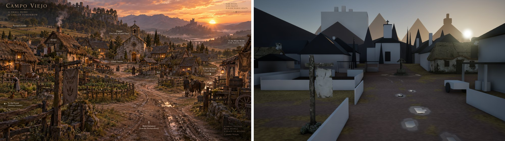
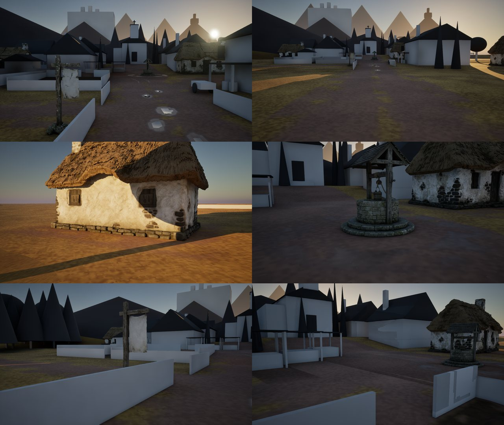
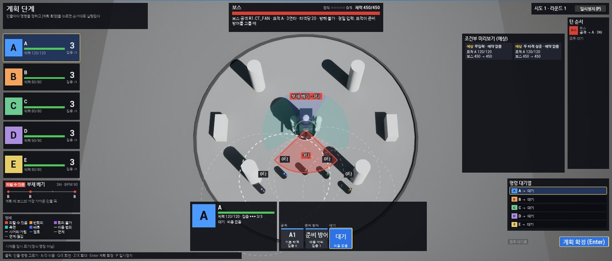
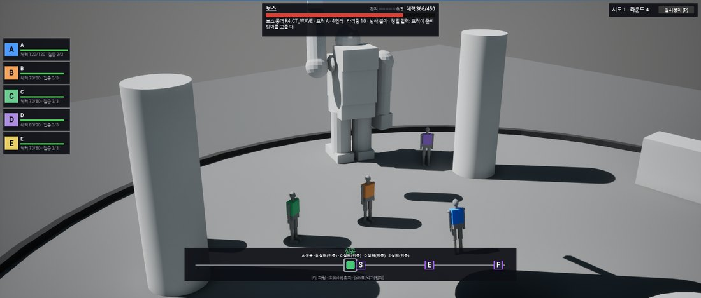

목표: 여자주인공 모델링 완성 · 전투 로직 완성 · 캄포 비에호 준완성. 진행 막대는 단계 수만 셉니다. 남은 기간이나 품질 달성률이 아니며, 한 단계가 다른 단계보다 훨씬 오래 걸릴 수 있습니다. 결정 기록 맨 위 '현재 유효한 기준' 표와 같은 기준으로 씁니다. 오늘 밤 목표(사용자 9/29): 튜토리얼 스테이지까지 구현 + 여주인공 모델링 — 튜토리얼 스테이지는 패키지 확인까지 끝났습니다(튜토리얼 스테이지 캡처).
완료진행확인 전(사용자 외형 확인)결정 필요환경 조작 대기대기
목표 세 가지
GOAL 1 · ④ 얼굴·헤어 · ⑤ 체형·동작·조립
여자주인공 모델링 완성
단계 8/19 완료 · 5 진행·확인·대기 중 · 6 미착수얼굴 방향·귀 구멍 메우기 승인·목 뒤 동작 2회차가 관문
이전 완료 이력 — 보존아래 결과는 그대로 유지하며, 뒤 단계에서 되돌리지 않습니다.
확정 얼굴이후 단계에서 바꾸지 않음 · 원래 크기 비교로 매번 확인완료
기본 체형 v1b · 리그 · 모듈 14부품 인계(v001)8K 색 굽기 · 88본 리그 · 소켓 8 · 오프라인 파일 검사 오류 0완료
얼굴 정리귀·관자놀이 옛 머리칠 정리 · 이마·관자놀이 점·얼룩 정리(사용자 지시) · 눈썹·눈·뺨 점 보호완료
목·손목 수정쇄골·목 음영 · 손목 고리 턱 제거 · 얼굴 불변완료
골반·엉덩이·가슴 조정 v2d골반 33.1→37.4cm · 허리 18.5cm · 사용자 '확실히 좋아졌어' · v2d 원본은 그대로 보존완료
게임 안 외형 연결 코드 1단계주 브랜치 0b6b3af · 요청 번호·여섯 검증·한 프레임 교체 · 실제 자산 연결은 2단계완료
헤어·얼굴 — 통합 후보 고정, 외형 개선·동작 진행사용자 방향(9/29)에 따라 끝난 수리는 통합 후보 하나로 고정하고, 외형 개선은 분명한 방향 테스트 1개와 한 구역 시험부터 합니다. 보고는 기술 수리 / 외형 개선 / 동작 통과로 나눕니다.
헤어 방향 — 원본 메시 헤어 살리기(사용자 선택)원본 헤어의 스타일·윤곽·색 유지 · 옛 가닥 재구성 계열(h 번호)로 되돌아가지 않음완료
기술 수리 — 통합 후보 cand1 고정목 뒤 연결부 재구성 · 잔여 조각 숨김 · 옛 목 조각 숨김 · 미간 법선 · 목 자국 정리 · 표준 9·추가 13시점 통과(정지) · 목 뒤 7시점·얼굴 1800px 부분(흰 리본 평평한 끝·오른쪽 목 옆 아랫머리 윗단 잔존) · 확정 얼굴 형상·UV 불변확인 전
외형 개선 — 얼굴 테스트(사용자 판단 대기)중안면 C: 45° 눌린 인상이 눈에 띄게 줄고 눈 밑 주머니 없음, 반대쪽 볼 윤곽이 새로 보임 · 하관 T1 불통과(사각 턱) → T2: V가 부드러운 U 쪽으로, 턱끝 작고 둥글게, 주름 없음(은근함) · 방향이 맞으면 강도 조정 · 미간 아래 점 제거 통과(기술 수리)확인 전
외형 개선 — 헤어·귀 주변(사용자 결정 필요)옆머리 톱니 끝 되돌림 = 부분(얼굴 45° 톱니 거의 소멸, 턱 아래·목 옆은 원래 잘린 끝) · 절차적 가닥 교체·원본 다발 이식 = 불통과로 중단 · 귀 주변 파편감의 주원인은 헤어가 아니라 확정 얼굴 메시의 구멍(귀·관자놀이 155곳)과 옛 조각 → 구멍 메우기 설계 끝, 확정 얼굴 변경이라 승인 대기결정 필요
동작 통과 — 목 뒤 연결 가중치(⑤)1회차 불합격: 연결 틈은 크게 줄었으나(좌회전 최대 10.7→1.6cm) 뒤 3/4·옆에 새 대각선 돌출 · 원인 = 짧은 전이 구간의 급한 가중치 변화 · 방법을 바꾼 2회차(양면 겹침 제약 풀이) 준비 끝, 실행 차례 · 물리·연속 영상·엔진 전달 미실행진행
체형 — 확인·조정 중체형은 v3f 채택, 다리 길이 선택 대기입니다.
체형 v003 — v3f 채택(사용자 지시), v3c는 비교 기준 보존v3d 비채택(수평 융기) → v3e 부분 개선 → v3f 대각선 접힘 완화 · 허리 19.8·골반 37.8·고랑 3.2cm · 원본 v2d 불변 · 원인 분리: 리그 OFF·회색 재질에서도 잔주름 남음 = 기본 곡면(추가 편집 없음)완료
다리 길이 두 안 비교 완료(⑤) — 사용자 선택 대기+1.0/+1.5cm, 발목 고정·고관절·무릎에 비율 분배 · 키 170.05·골반 37.9·허리 19.8·고랑 3.2cm 불변 · 판정: 수치 통과 / 정지 외형 선택 대기 / 움직임 부분(원형부터 있는 고관절 압축 주름) / 모듈 부분(몸 631경계 간격 0, 목 기존 겹침) / Unreal 미실행 · 셰이프 키·리그 사본 3개 원본 보존, 채택 뒤 출력 사본확인 전
최종 조립본 재검증 — 확정 뒤 별도최신 체형·헤어를 적용한 조립본은 이전 검증과 별개로 연결·움직임을 다시 검증합니다.
옷 떼기 · 의상 6슬롯헤어·체형 확정 뒤대기
게임 메시 · 굽기 · 스킨 · 내보내기(v002)확정 얼굴 유지 여부를 원래 크기 이상 확대 비교로 확인한 뒤 인계대기
엔진 조립 · 그룸 물리 · 망토 천⑤ 계획 3편 완료 · v002 인계 뒤 실행대기
목 이음 최소 수정(⑤ 가중치만) — 부분 개선·미완료몸통 목 가중치 750정점만 · 고개 회전 어긋남 부분 개선(왼쪽 개선, 오른쪽·뒤 잔존) · 새 띠·꼬임 없음 · 정지 겹침·재질 경계 미완료 · 얼굴·정지 체형 불변 · 회색 판 게시확인 전
조립본 연결·움직임 재검증외형 연결 2단계로 실제 자산 연결 · 걷기·달리기·헤어·의상 흔들림 · 얼굴 불변 재확인대기
카메라 인물 가림 회피 · 탐험 복귀 입력 · 먼 조망 타격 수주 브랜치 7c1ff5d · 시험 301 · PIE 35/35완료
사용자 패키지20260928-7c1ff5d-ct-p1 · 튜토리얼 포함완료
속도 턴 전환 — 구현 단위 커밋 끝, 필드 통합 중설계서 v0.3.1 8절 확정 뒤 S1~S3 구현 단위가 모두 ③ 결합 검증을 거쳐 UI 브랜치에 커밋됐습니다. 지금은 캄포 비에호 필드 전투를 속도 턴으로 바꾸는 통합 단계이고, 오늘 밤 목표는 튜토리얼 스테이지입니다.
사용자 결정 A·B·C → 설계서 v0.3.1 → 8절 확정속도(속공) 개별 차례 · 카메라 권장 세트 · 다수 적 + 이동 보스 · 모두 권고안 + 조건 4완료
S1 규칙 핵심 · 튜토리얼 재매핑 · 진행자 연결(②-A)결정성·거부·경로·기록 v4 · 차례 번호 튜토리얼 코치 2c643e0 · 진행자 속도 턴 모드 c97db25 · f6d79ba · 자동 진행·대역 연출 bb973a0완료
S2 화면(②-B)배치 6d84759 · 타임라인 025c23c · 예고 두 단계 0ab2dec · 적 정보 ff26e71 · 명령 흐름 7c3bab3 · 연계·도주 f4142c0 · 위협·엄호 d4c4fcf · 예약 결정 57c26af · 행동 결과 기록 377fbd4 · 전투 연출 연결 3707ce7완료
S3 카메라 추적·전투 효과 · 예약 시점 미리보기(②-A)2f50c58 · 436efd1완료
S4 전장·조우·대역(⑥) · 통합 (A) 카메라 여유·공터 조우 데이터c647952 → 78738ba · 58a29bc(공터 첫 조우 = 튜토리얼 자경단원)완료
통합 (B) 필드 전투 속도 턴 전환 코드(②-A)공터 트리거 조우 순서·다시 켜기 · 필드 도주 처리 · 맵 값으로 진행자 분기 · 760e5e1완료
통합 (C) 공터 트리거 조우 목록·복귀 지점(⑥)조우 순서 튜토리얼 → 두 번째 조우 · 복귀 지점 트리거 밖 500cm · verify 58/58 · a660142완료
통합 (D) 필드 PIE(②-A) · 필드 흐름 화면 캡처(②-B)PIE 9/9(수정 전 실패하는 변형으로 검사 확인) · 게임 실행 캡처 튜토리얼 9/9·필드 12/12 · 캡처에서 필드 전투 화면이 숨던 결함을 찾아 고침 e806fab완료
결과·재도전·정지 창 S2-8b · 튜토리얼 안내·적 공격 박자 줄 S2-7b(②-B)b5f4a48 · be2b7a7 · 안내 문구 3건 총괄 결정 · UI 162/162·전체 460/460완료
S5 검증·패키지(③) — 튜토리얼 스테이지Development 패키지 20260929-e806fab-speedturn-s5 · Cook 오류·경고 0 · 실행 3회 종료 0 · 자동 점검 47/47 · 사람 플레이 확인은 사용자 몫완료
공통 개발 도구 — 성능 측정·외형 연결두 도구 모두 주 브랜치(0b6b3af, 시험 322)에 병합됐고, 캄포 비에호 성능 측정(R3)과 여주인공 실제 자산 연결(2단계)이 이 도구 위에서 돌아갑니다.
성능 측정 명령 1단계Development 전용 · CSV 판정 · 스모크 4차 통과 · Shipping 제외완료
외형 연결 1단계요청 번호 · 여섯 검증 · 원자적 교체 · 리셋 순서완료
캄포 비에호 R3 측정 실행(⑤)3회 완료 · 평균 5.65ms · P95 5.8ms · 엄격 검사 3/3 · 기준선 확정(Fab 재질·데칼·식생 뒤 재측정)완료
외형 연결 2단계(실제 자산)v002 인계 뒤대기
GOAL 3 · ⑥ 레벨 · ⑤ 성능·캡처
캄포 비에호 준완성
단계 10/16 완료 · 1 진행·확인·대기 중 · 5 미착수나무 배치는 결정 끝, 튜토리얼 목표 뒤 실행
블록아웃 · 흐름 A 끝까지입구 → 살펴보기 3곳 → 공터 전투 → 숲길 출구 · 걷기 9/9완료
준완성 계획 v0.1 · 지형 12조각완료
사실풍 소품 1단계 · 맵 재구성 B초가집·팻말·우물 · 나나이트완료
조명 A안(4200K) · 물웅덩이·젖은 흙 재질 · 공터 조망 3200커밋 7aca405·ab81645 · 물 확대 시 가는 선은 알려진 한계완료
전투 공간 계획 v0.4(⑥)세 층 공간 · 공터 12/15/18m · 보스 배치도 · 조우 거리 계산(실제 판정 코드와 같은 기하)완료
성능 측정(R3) · 확인용 캡처·영상(R5)패키지 0b6b3af 3회: 평균 5.65ms · P95 5.8ms · GPU 3.9ms(목표 16.7ms 안, 진단 카메라 경로 — 실제 흐름 측정은 미검증) · 정지 화면 9장 + 걷기·전투·복귀 90초 편집본(원본 194초는 내부 보존) · 흙길 24.1m 데칼 8구간·지형 검사 동기화(⑥) · 방화벽 창은 총괄 감시가 자동 취소(사용자 위임)완료
Megascans 표면 7종 반입(⑤) — 지형 층 적용저장·재로드 검증 7/7 · 지형 검사 12/12 · 원본 8K 보존(게임 상한 4K) · 주 브랜치 1108221 · 풀 색은 결정 대기완료
입구 흙길 바퀴 자국 데칼(⑥-B 에디터 원격 조작 첫 세션) · 물웅덩이 구간 끊기주 브랜치 c2e4704 · 1aa1e6b · 시야 검토 도구 d814bb1 · 지형 표면 계약 시험 d2541ab · UI 브랜치 병합 bf68a51 · 자국 형태는 결정 대기완료
Megaplants 나무 7종 반입(사용자) · 배치 명세 v0.2(⑥-A)남은 블록아웃 나무 41 중 31그루 교체 + 공터 둘레 시험 덤불 4 · 침엽수 10그루는 블록아웃 유지(사용자 결정: 침엽수 에셋은 나중) · 실험 플러그인 두 개 켜기(사용자 결정)완료
공터 필드 조우 연결 (A)~(D)58a29bc · 760e5e1 · a660142 · 필드 PIE 9/9 · 패키지 확인완료
나무 배치 세션(⑥-B) → 스크립트 고정(⑥-A)통합 (C) 커밋 → 플러그인·에셋 반입(③ 빌드·쿠킹) + ⑤ 렌더·바람 확인 뒤 · 튜토리얼 목표 뒤대기
보유 Fab 팩(환경 4 · VFX 5)과 소품·바위·풀 반입사용자가 런처 '프로젝트에 추가'로 넣으면 반입 배정 · 나무 7종은 반입 끝환경 조작 대기
사실풍 소품 2단계 21개건물 7 · 소품 11 · 원경 3 · 생성 크레딧 약 1,715결정 필요
원경(성터·성·다리) · 효과대기
Field2 기습 자리 · 보스 필드 배치필드 조우 안 A 사용자 결정 뒤대기
여주인공 모델 연결 · 패키지 · 사용자 걷기통합 확인 조건대기
통합 확인 조건 — 세 목표를 한 패키지에서 검증
목표별 완료 기준과 별도로, 아래 흐름을 한 패키지에서 끊김 없이 통과해야 세 목표를 '완성'으로 봅니다. 단계마다 걸리는 목표와 지금 상태를 적었습니다. 패키지 검증은 ③이 하고, 사용자 플레이 확인이 마지막입니다. 오늘 밤 목표는 3·4·6단계(튜토리얼 스테이지)를 속도 턴으로 패키지까지 통과시키는 것입니다.
1확정 캐릭터(얼굴·헤어·체형 확정본 v002)로 캄포 비에호 시작대기 — 얼굴 테스트·헤어 구역 시험·목 뒤 동작 뒤 v002 인계G1 · G3
2마을 이동 · 카메라 · 헤어 · 의상 움직임 확인대기 — 그룸 물리·망토 천 조립 뒤G1 · G3
3공터 튜토리얼(속도 턴 재매핑판)통과 — 패키지에서 튜토리얼 안내·박자 줄·승리·복귀 확인, 사람 플레이 확인 대기G2
4다수 적 조우(시험용 적 3종 · 공터 12/15/18m)부분 — 두 번째 조우가 패키지에서 열림, 파티 구성 결정 대기G2 · G3
5이동 보스 패턴(예고 2단계 · 카메라 보호 구간)부분 — 보스 무대 조우·카메라 추적 커밋, 필드 배치는 안 A 결정 뒤G2
6승리 · 패배 · 도주 뒤 복귀통과 — 패배 재도전·승리 복귀·도주 복귀(필드 PIE·게임 실행 캡처·패키지)G2
7마을 탐험 계속(성능 기준 안)부분 — R3 기준선 평균 5.65ms, 나무·소품 뒤 재측정G3
대기 항목 — 무엇이 막혀 있고, 무엇이 필요한지
네 갈래로 나눴습니다. 항목마다 지금 막혀 있는 작업, 필요한 결정이나 조작, 해결되면 바로 나오는 다음 결과물을 적었습니다. 실행이 막힌 작업은 '진행'이 아니라 '환경 조작 대기'로 표시합니다.
사용자가 Fab 웹에서 라이브러리 추가·다운로드해 ArtSource/Fab에 두면 총괄이 반입 배정 · 바위 3개 유료는 제외(유료 불허)
해결 후 다음 결과물
식생 첫 배치 캡처
환경 조작 대기사운드 생성 서비스 인증(⑦ 세션에서 /mcp 로그인)
막힌 작업
박자 신호 5종 첫 생성 · 환경음
필요한 결정·조작
사용자가 ⑦ 세션에서 로그인 창을 통과 · Q2 음악 방향 · Q3 비언어 발성 · Q8 첫 생성 묶음·크레딧 한도 결정
해결 후 다음 결과물
P0 박자 신호 후보 생성 → ⑤ 반입 → 청취 확인
선택 옵션
안 정해도 작업이 멈추지 않는 항목
선택팀 세션 빠른 응답 모드 크레딧
막힌 작업
없음(응답 속도만)
필요한 결정·조작
계정 로그인 흐름이라 사용자 몫
해결 후 다음 결과물
팀 세션 4개에 빠른 응답 모드 켬
선택공개 저장소 이력 정리
막힌 작업
없음
필요한 결정·조작
이력에 남은 개인 사전 커밋을 지울지 그대로 둘지
해결 후 다음 결과물
이력 재작성 또는 현 상태 유지
9/29 새벽 정한 것: 헤어는 끝난 수리를 통합 후보 하나로 고정하고 한 구역 시험으로 개선 · 보고는 기술 수리 / 외형 개선 / 동작 통과로 구분 · 사용자에게는 총괄 한 곳에서 그림 링크와 함께 · 얼굴은 1~2mm 미세 비교 대신 분명한 방향 테스트 1개(중안면 C) · 하관은 분리 테스트 · 옆머리 톱니 끝은 국소 수정 · 미간 아래 점 제거(오른쪽 볼 점 유지) · 나무 배치는 에디터 원격 조작 세션이 실행 · 실험 플러그인 두 개 켜기 · 침엽수는 나중 · 오늘 밤 목표 = 튜토리얼 스테이지 구현 + 여주인공 모델링.
전투 공간 첫 확인 · CP-T2
전술 전투 공간(지름 30m)에서 보스 패턴 4개를 재현 기록으로 자동 진행한 PIE 화면입니다. 60fps와 30fps에서 판정과 사건 기록이 바이트까지 같았고, 인물과 보스 자리는 규칙 계산과 1cm 안으로 맞았습니다. 선은 확인용 임시 표시이고, 실제 계획·실행 화면은 다음 단계(CP-T3)에서 붙습니다.

1라운드 부채 베기 · 빨간 부채(반지름 6m, 90°), 노란 원이 맞을 인물

2라운드 낙인 창 · 원 안의 D·E가 원 밖으로 이동하는 중

4라운드 계획 · 돌진이 빗나간 뒤 옮긴 보스와 전장 전체 파동 예고(보라)
전술 전투 패키지 · CP-T4 · 캄포 비에호 조명
패키지(1080p)에서 광역 공격 뒤 라운드 결과가 인물별로 나뉘어 보입니다. 패키지 확인 중 찾은 결함을 고친 결과입니다. 아래는 캄포 비에호에 해 뜰 녘 조명(4200K)을 연결한 비교입니다. 나머지 건물·식생은 아직 블록아웃이라 컨셉의 분위기는 외부 3D 생성 도구 2단계와 함께 채워집니다.

패키지 1080p · 광역 공격 라운드 결과(인물별)

컨셉 · 이전 · 새 조명(R4)
캄포 비에호 1단계 확인 · 맵 재구성 B
왼쪽은 컨셉 그림, 오른쪽은 같은 구도의 게임 화면입니다. 초가집·우물·팻말만 사실풍 모델이고, 나머지 집·울타리·예배당·나무·원경은 아직 흰색·회색 블록아웃입니다(2단계 대상). 빛이 그림보다 푸르고 어두운 것은 ⑤ 조명 작업에서, 흰 점처럼 보이는 물웅덩이는 ⑥이 조명 조정 때 맞춥니다. 팻말 천에 글자가 없는 것은 사용자 결정(그림 속 영어 이름 대신 작업용 이름만)에 따른 것입니다.

컨셉 구도 비교

컨셉 구도 · 입구 길 · 초가집 · 우물 · 팻말 · 광장
전술 화면 연결 · CP-T3
계획 화면과 실행 화면이 연결되어 PIE에서 처음부터 끝까지 플레이됩니다(자동 조작 70/70). 60fps로 조작한 기록을 30fps로 다시 돌려도 사건 기록이 바이트까지 같았습니다. 편집기 창 캡처라 글씨가 작게 보이며, 1080p 전체 화면 배치는 패키지(CP-T4)에서 확인합니다.

계획 단계 · 보스 예고(부채 베기 3타)와 인물별 예상 타수, 명령 칸

실행 단계 · 광역 공격 박자 줄과 인물별 판정 줄
사용자 몫 · Fab 무료 에셋 추가(집에서)
모두 무료(Standard License)입니다. Fab에 로그인해 각 링크에서 무료인지 확인하고 내 라이브러리에 추가해 주세요. 라이선스는 직접 읽고 동의합니다. 가·나는 다운로드에서 가장 높은 해상도를 받아 zip 그대로 (내부 경로)>에 두시면 됩니다. 다는 라이브러리에 추가만 해 두세요(나무용 플러그인은 아직 켜지 않습니다). 그 전까지 지형은 임시 재질로 진행합니다.